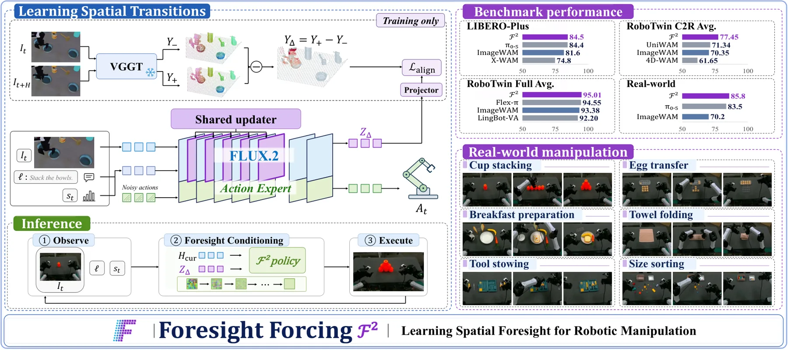
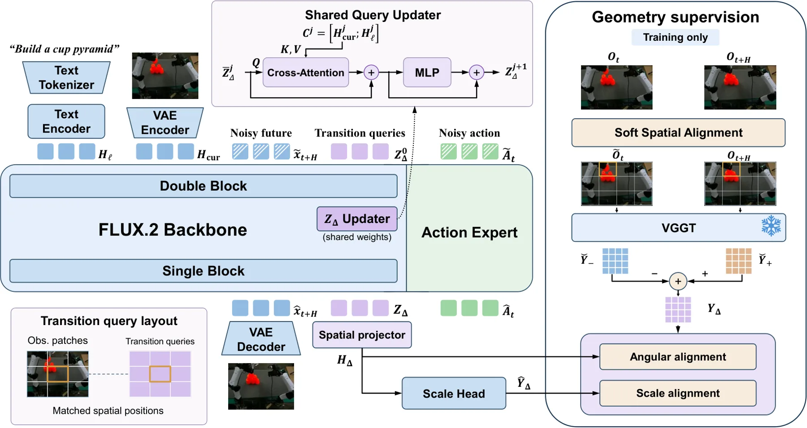
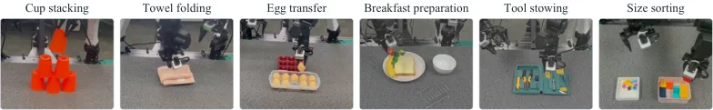
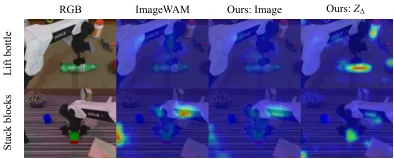
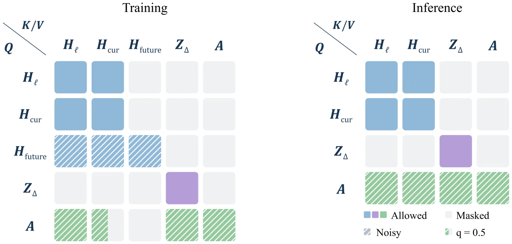
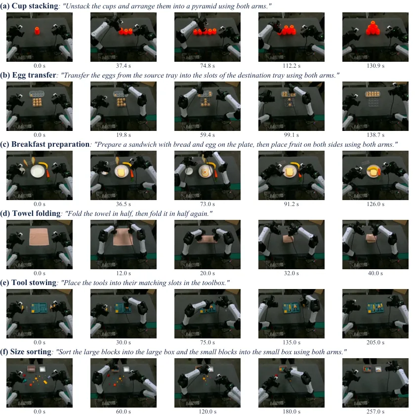

Foresight Forcing：把三维教师特征的「变化量」蒸馏成操作策略的空间前瞻
Foresight Forcing: Learning Spatial Foresight for Robotic Manipulation
一句话：不预测未来像素，而是预测「三维教师特征会怎么变」——把这个变化量蒸馏成 query，动作生成时只读 query，部署时不需要教师也不需要未来帧。
success
success
score
latency
作者、单位与技术谱系 · Research context
作者与单位
研究脉络
- ImageWAM（图像世界动作模型）方法基座关系：提供 WAM 的联合训练框架（未来图像 flow-matching + 动作 flow-matching）与全部对照基线，F² 只在其上加几何转变监督。[Foresight Forcing 原文 §3.4 与 §4.1]
- VGGT（三维教师）方法上游关系：提供冻结的 patch 级三维特征，其前后帧差值构成本文的稠密监督目标。[Foresight Forcing 原文 §3.2 与 §4.4]
- Geometry Forcing（特征对齐目标）方法上游关系：提供「方向 + 尺度」的特征对齐损失形式，本文把它从「视频生成对齐三维特征」改用到「操作 query 对齐三维特征差」。[Foresight Forcing 原文 §1 与 §3.3]
- FLUX.2 [klein] 4B MoT方法基座关系：提供视觉–动作联合骨干与 token 网格（决定 query 数量与空间布局）。[Foresight Forcing 原文 §3.2、§3.3]
合作网络
- F² → anson2333/ForesightForcingF² 作者团队 → github.com/anson2333/ForesightForcing关系：官方代码[Foresight Forcing 项目页链接区]
- SJTU × HKU × SII × Noematrix × Fudan × HKUST × NUSShanghai Jiao Tong University → The University of Hong Kong / Shanghai Innovation Institute / Noematrix / Fudan / HKUST / NUS关系：共同署名（跨机构合作）[Foresight Forcing 项目页作者单位表]
- F² → VGGT 冻结教师F² → VGGT（冻结）关系：技术依赖（监督来源）[Foresight Forcing 原文 §3.2、§3.3]
arXiv 元数据只列前八位作者，完整 13 人名单与单位映射取自官方项目页，并已逐条对照上标；技术谱系取自正文显式「following」表述与消融表。未发现可公开核验的导师关系，network 只记录代码入口、跨机构署名与技术依赖。
方法本质拆解 · What actually changed
是不是微调？
是微调 + 新增蒸馏分支：以 ImageWAM（FLUX.2 [klein] 4B MoT + Action Expert）为基础，在基准演示上微调，同时训练空间转变 query、共享 updater、投影与尺度头；冻结的 VGGT 教师只在训练时前向，不参与反向。
有没有额外约束？
结构性约束是注意力掩码：query 只看自己，动作专家看指令、本体、动作 token 与 query，未来 token 全程屏蔽，当前帧可见性以 0.5 概率随机丢弃。损失约束是角度余弦 + 尺度 MSE + 特征范数正则，按 patch 权重（配准有效性 × 变化幅度）加权，几何项权重随训练升高。
推理/后端到底做了什么？
推理只跑学生：当前多视角图像 + 指令 + 本体 → MoT 骨干与 updater 预测 query → 动作专家读 query 与当前视觉特征，10 步去噪出一个 16 步动作块。未来帧、VGGT 与蒸馏头全部移除，CUDA Graph 下 99.53 ms/chunk。
方法本质是什么？
本质是把「世界模型预测未来」从像素空间搬到三维教师特征空间，只保留「变化」这一维，并用 query 把它变成动作专家的直接条件。它没有显式重建三维，也没有预测未来图像，因此省掉了生成成本，但监督信号的上限由教师特征的几何质量决定。
输入当前多视角图像、指令与本体状态，学生预测一组空间转变 query（监督来自冻结 VGGT 的前后帧特征差），动作专家直接读 query 出 16 步动作，部署不需要教师与未来帧。

结论与问题Conclusion & Motivation
核心结论
F² 的主张是：世界动作模型不必预测未来像素来获得几何感，可以直接学「三维教师特征的变化方向与尺度」。它用冻结 VGGT 对「配准后的当前帧 + 未来帧」取 patch 特征并相减，得到逐位置的稠密变化目标；一组与视觉 token 网格对齐的可学习 query 在每个 double block 后被共享 updater 用当前视觉与指令状态精化，并被监督去匹配这个变化；最终动作专家直接读 query 生成动作。部署时未来帧与 VGGT 都不需要。效果上 RoboTwin 2.0 Full 平均 95.01%（不加机器人预训练）、LIBERO-Plus 84.5%、真实六任务 85.8%，而单 chunk 延迟只从 187.41 ms 增到 195.01 ms。
动机与问题
动作标签只监督动作，不监督「动作让场景变成什么样」；WAM 通过预测未来观测补这个信号，但 RGB 或视觉潜变量把任务相关空间关系与外观、背景、视角混在一起，控制真正需要的「物体相对目标要怎么移动、铰接件要怎么转」仍是隐含的。已有几何监督（X-WAM、4D-WAM、GeoSem-WAM、MECo-WAM）多把深度/点图当额外输入，或直接回归显式三维运动，前者信息没被显式组织，后者标注昂贵且误差会直接进策略。作者的切口是：用预训练三维模型的特征差当「免费的三维变化标签」，只学变化、不学绝对几何。
方法Method
方法总览
训练时对每个视角把当前帧用光流对齐到未来帧网格，得到 Ĩ_t；冻结 VGGT 联合编码 (Ĩ_t, I_{t+H})，取两组 patch 特征并按学生 token 网格重采样，逐位置相减得 Y_Δ=Ŷ_+−Ŷ_−。学生侧在 FLUX.2 [klein] 4B 的 MoT 骨干里加入 N 个空间转变 query（LIBERO 双视角 14×28 网格共 392 个），每个 query 对应一个图像位置；query 在每层只做自注意力（屏蔽未来、当前、指令、动作 token），每个 double block 之后由共享 updater U 读当前视觉状态与指令/本体状态做残差交叉注意力 + FFN 精化。精化后的 query 经投影 P 进入教师特征空间，用角度 + 尺度两项损失对齐 Y_Δ，并被动作专家跨层直接读取。
关键技术细节
防泄漏是这套设计的关键：query 的原生注意力被限制为自注意力，未来帧 token、当前帧 token、指令与动作 token 全部屏蔽，只有 updater 能读「当前视觉 + 指令/本体」，因此训练时 query 不可能偷看未来。对齐损失分两块：角度项 −cos_ε(q_p, y_Δ,p) 管方向，尺度项用 S_θ(q̂_p) 重建教师特征、算 MSE，另有特征范数正则 L_rad；每个 patch 的权重 w_p 同时考虑配准有效性与变化幅度，W=Σw_p。动作专家对当前帧 H_cur 的可见性以 q=0.5 的概率随机丢弃（reference-condition dropout），让策略同时见到「有参考帧」与「只有转变条件」两种情形，推理时两者都在。总损失为 λ_img L_img + λ_act L_act + λ_geo ρ(k) L_geo，ρ(k) 随训练逐步加大几何监督权重。

实验Experiments
实验设置
骨干是 FLUX.2 [klein] 4B 的 MoT + Action Expert，动作块长 H=16；教师是冻结的 VGGT；训练在 ImageWAM 基础上加几何转变监督，按各基准演示微调。评测四块：LIBERO 四个套件（每套 10 任务 × 50 次试验）、LIBERO-Plus 七个扰动维度（只用原始 LIBERO 演示、不加增强数据）、RoboTwin 2.0 的 Full（50 个双臂任务）与 Clean-to-Random（只用干净演示训练）、以及六个真实任务（叠杯、叠毛巾、转移鸡蛋、备早餐、收纳工具、尺寸分拣，每任务 15 次试验）。对照包括 OpenVLA-OFT、π0.5、Spatial Forcing、LingBot-VA、Motus、Fast-WAM、MECo-WAM、Flex-π、ImageWAM、X-WAM、4D-WAM 等。消融在 LIBERO-Plus 上做，全部变体训练 10 epoch。
实验数字与比较
RoboTwin 2.0 Full：Clean 94.90 / Rand 95.12 / 平均 95.01，对照 Flex-π 94.55、ImageWAM 93.38（相对 ImageWAM +1.70 / +1.56 点），且不使用机器人预训练。LIBERO-Plus：总体 84.5 对 ImageWAM 81.6（+2.9），相机扰动 83.1 对 77.7（+5.4）、机器人状态扰动 57.0 对 48.3（+8.7）。RoboTwin Clean-to-Random：平均 77.45（Clean 87.84 / Rand 67.06），对照 ImageWAM 70.35、UniWAM 71.34。真实六任务：平均 85.8，对照 π0.5 83.5、ImageWAM 70.2；其中叠杯 93 对 73、收纳工具 65.0 对 63.3，但备早餐 80 对 87 低于 π0.5。LIBERO 四套件平均 98.5，与 ImageWAM 98.4、Spatial Forcing 98.5、Flex-π 98.5 基本持平（作者自己承认已接近天花板）。
消融/失败边界
监督目标：不做蒸馏（只有 query token）时 LIBERO-Plus 82.3%，加特征差蒸馏到 84.5%，说明增益不是「多了几个 token」；换成「当前帧特征」目标 83.2%、「未来帧特征」目标 81.2%，都不如「特征差」，证明监督的正是「变化」而不是「状态」。教师选择：DINOv3 83.4%、VGGT 84.5%、π³ 82.9%，几何导向的教师更好但并非任意几何教师都行。query 预算：392 个（与 14×28 双视角 token 网格对齐）最好，200 与 512 都更差，说明不是越多越好。去掉共享 updater（query 只保留自注意力）84.5%→81.7%；把参考帧可见概率 q 从固定 0.5 改成退火到 0，效果更差。边界：LIBERO 已饱和，无法区分方法；真实任务里备早餐低于 π0.5，说明连续多步任务上转变表示并非总占优。
局限与迁移Limitations & Transfer
局限与待核验
作者明确写了：监督目标是特征空间表示而非真实三维运动的测量；query 预算与网格对应的实验无法完全隔离「空间对应」本身的贡献；真实任务只有 6 个、每任务 15 次试验，且自建协议下 ImageWAM 只有 70.2%（作者说明任务、演示与评测协议不同）；LIBERO 已接近成功率天花板。我们的待核验项：第一，VGGT 在「对齐后的当前帧 + 未来帧」上联合编码，配准误差如何影响 Y_Δ 没有单独量化；第二，教师是 VGGT，学生用 FLUX.2，特征空间维度与语义是否可比只靠一个线性投影 + 尺度头，投影容量是否成为瓶颈未知；第三，真实任务没有报置信区间，85.8 vs 83.5 的 2.3 点差距在 15 次试验下是否显著需要复核；第四，CUDA Graph 下 F² 99.53 ms 反而比 ImageWAM 80.20 ms 慢 24%，与「只增 4.1%」的 eager 结论不同，部署时应以图模式数字为准。
与你研究路线的关系
这篇对我们的启发是「用现成几何模型的输出当免费监督」这一模式：不需要三维真值，只需要一个冻结的几何基础模型在「前后两帧」上的特征差，就能给下游模块提供稠密的空间变化信号。我们的状态估计里同样存在「有几何模型但没有逐点变化标签」的场景（例如动态场景下的点云配准、运动物体剔除），可以把 VGGT 特征差当作「哪里在动」的软掩码，替代手工阈值。可迁移的第二块是掩码设计：query 只做自注意力、updater 只读当前与指令，这种「能力隔离」可以直接用于我们的多传感器融合网络，防止某一模态在训练时偷看未来/真值。下一步最小实验：在我们带动态物体的序列上，用冻结 VGGT 的前后帧特征差生成动态区域掩码，接入现有的点云配准/剔除流程，与基于残差卡方的动态检测比较召回与误删。







